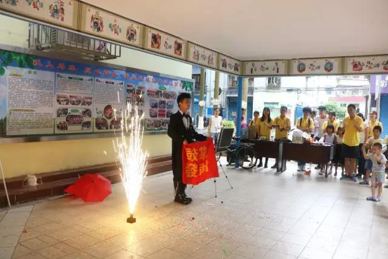

敬老助残
“百善德为本，敬老孝当先”
活动介绍
为进一步加强和改进我院大学生思想道德教育建设，弘扬中华民族尊老、敬老的传统美德，我们秉承着“百善德为本，敬老孝当先”的精神。努力营造社会和谐的良好氛围，院青志联会定期组织青年志愿者分别前往湛江市赤坎区九二一社区、中华社区文化室等地，探访贫困户以及独居老人，通过聊天、慰问等形式，让弱势群体感受到来自社会的支持以及关爱。作为一代大学生，我们希望能够通过我们的微薄之力，让老人们的生活多一点色彩，少一点忧郁。
活动内容
挑拣豆子
挑拣豆子
婆婆聊天
婆婆聊天
弯腰道谢
弯腰道谢
慰问送资
慰问送资
才艺展示
才艺展示
-
-
-
-
-
- 
- 成
- 员
- 心
- 得
红花生于幽谷，却能倾吐阳光。
心似人间四月，人如青山不老。
经过一下午的志愿活动，队员与我来到吴婆婆家畅聊一下午，一开始由于不熟悉，我们靠之前给的信息，慢慢的跟吴婆婆展开话题，老人家很有故事，很积极，谈到党的时候眼睛是真的发亮那种，述说着年轻工作勤勤恳恳，进团，入党，积极工作，做好带头作用，不搞特殊，一直很谦虚实事求是，也教导我们要感谢党，要好好学习，也要时常关心自己的家人，在她述说当年的故事时，很感染。
我们队里有不会讲白话的妹子，她们较难沟通，也尝试过转译，但是效果并不是很好。快结束时，吴婆婆换了好几次坐姿，在后面离开看着吴婆婆走出家门，想着坐了一下午跟老人家一直聊天，虽然很开心，在夸她年轻，积极时，她是真的很开心，可是老人家还是会有些累的。这个我们也是要注意的，和老人家聊天的同时也要细心体贴点。
老人大部分都是自己在家，儿女由于忙于工作很少回来陪她们。她们看到我们志愿者前去拜访，都表示很感谢。有一些婆婆还是很健谈的，跟我们讲过去的事情，自己的儿女等等。特别是崔伯，知道我们过来特意从外面赶回来。但是陈婆婆因为老年痴呆症的问题，并没有和志愿者进行很好的沟通。而且志愿者人数较多的话，会使团队之间不能较好融合。所以建议下次敬老，每次出活动的志愿者可能人数需要减少。聊天过程中，有些老人一直在讲话是会口渴的，但是我们志愿者并没主动去询问老人是否需要喝水。
总体来讲，我觉得志愿者还是需要主动点的，我们是要聆听老人讲话，但是必要的沟通还是要有的，每次去都是老人们讲的话，是会产生一种疲劳感。例如崔伯一般是搬椅子到门外和志愿者聊天，但是下午太阳倾斜阳光照到崔伯身上，也没人提醒崔伯是否需要换个位置，最后是青志联的小伙伴拿伞站在高处为崔伯遮挡太阳。我希望能够主动起来，做到用耳朵聆听，用心去交流，让老人家感到开心快乐就是我们志愿服务的宗旨！